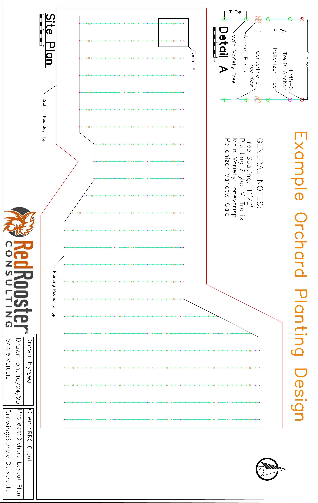
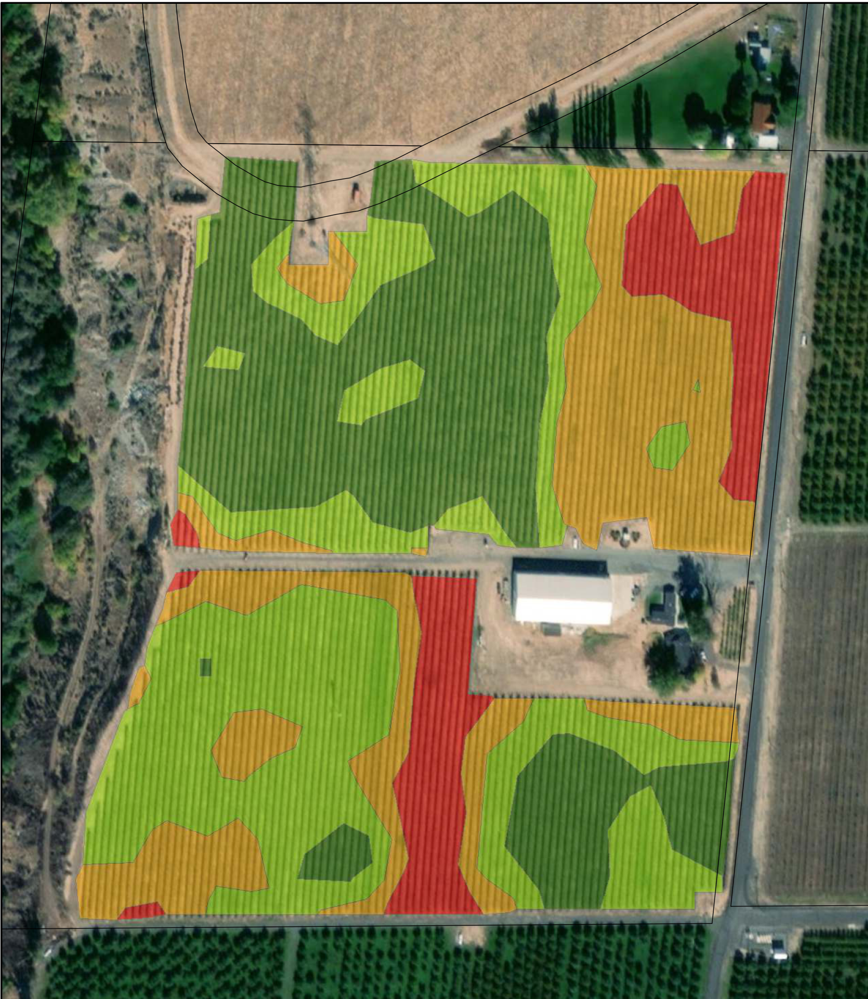

Planting Design, Data Overlay, and Bill of Materials
By implementing GPS and AutoCAD® technology, Red Rooster Consulting’s clients receive a precise design based on the three-dimensional aspects of the property. Our projects bring many advantages to our clients, including:
- Maximizing your planting: RRC has the ability to import survey and parcel information into your Planting Design, to ensure you have maximized the amount of your property that is available for planting.
- Adjusting on the fly: RRC can quickly tweak your Planting Design parameters as another way to maximize your planting. Minor adjustments to row and plant spacing can make a big impact on your production, especially over a large or unusually shaped property.
- Design plans for your team: Clients will receive a detailed set of project plans that can be utilized for planning as well as handed to your field team to follow during the installation process.
- Precise Bill of Materials: RRC provides each client with an exact Bill of Materials for their project. This deliverable comes in an adjustable Excel® format, so you have the ability to modify it prior to forwarding to vendors for an accurate bid.
- Improving your capital budget: With the detailed Design Plans and Bill of Materials we produce, our clients are able to create and manage a more precise capital budget. By eliminating the built-in cost safety factor, that money can be moved elsewhere in your annual capital budget.
Create a proactive project plan with Data Overlays
Electrical Conductivity (EC) maps are commonly used for pre-plant preparation. There are also a lot of other sources of multi-spectral data available these days. If this data comes in the form of a shapefile or other compatible file types, RRC’s software can overlay this data onto your Planting Design. With this added information, our clients have the opportunity to make many improvements to their site, including:
- Repairing planting areas with underperforming soil
- Placing infrastructure in areas of poor soil
- Customizing irrigation to various soil types
- Making early Planting Design adjustments (ex. decrease tree spacing, use vigorous rootstock) to areas of poorly performing soils
- Identifying potential difficulties early, such as troublesome areas for post or anchor installation